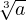
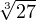
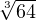
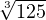
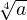
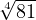
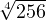
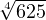

Kuupjuureks nimetatakse juurt, kus juurijaks on kolm. Arvu a kuupjuurt
tähistatakse  ja arvu kuubi järgi arvu leidmist nimetatakse kuupjuure leidmiseks.
Näiteks:
 = 3, sest 33 = 27
 = 4, sest 43 = 64
 = 5, sest 53 = 125
Neljandaks juureks nimetatakse juurt, kus juurijaks on neli. Arvu a neljandat
juurt tähistatakse . Arvu neljanda astme järgi arvu leidmist nimetakse neljanda
juure leidmiseks.
Näiteks:
 = 3, sest 34 = 81
 = 4, sest 44 = 256
 = 5, sest 54 = 625